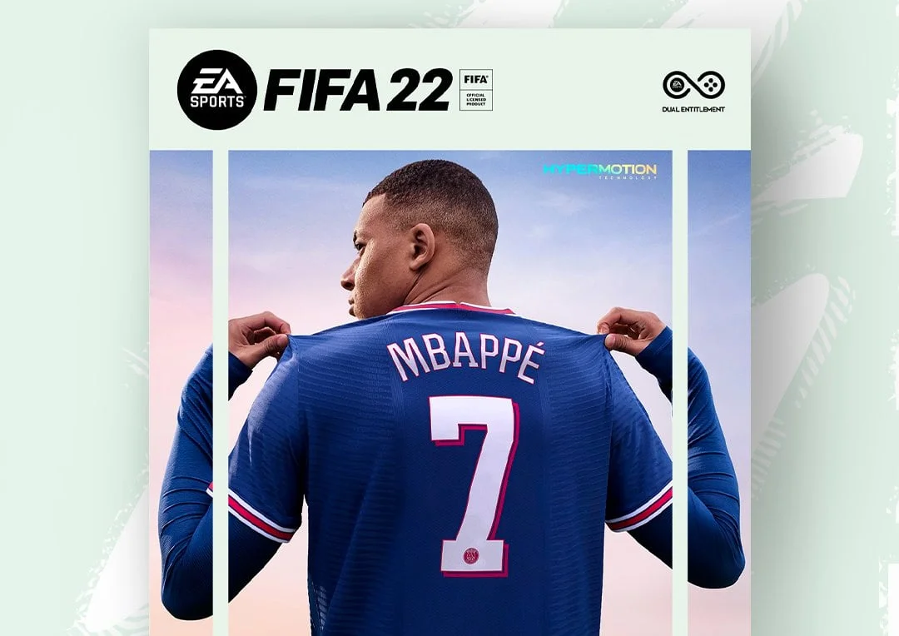

Hello, my name is Nivas. My favorite sports are both badminton and European football. My favorite sport to play is badminton. My favorite sport to watch and play is European football. I love to play badminton because I’m decent at the sport, I also play club badminton. I love football because it's a sport I’ve played since I was little, though I suck at sport; I love to watch because ever since I was little I was watching players like Messi and Ronaldo and I fell in love with the sport. I think and know football is the world's sport. My favorite player of all time is Cristiano Ronaldo and I know he’s the Goat of his sport and the greatest athlete of all time. Cristiano Ronaldo is my favorite and is many players favorite as all the good players of the new generation are fans of Ronaldo and he has inspired me to work harder towards my goals. My hobbies are badminton, coding, fifa, and editing football videos. I don’t do volunteering yet though I am taking a mentorship from the University of Alberta for Computer Science. I love to watch many different shows, but I like only 2 of the shows the most, which are Breaking Bad and The Office. There are only a few places I would like to travel, such as Dubai, Tokyo, and some tropical islands. I have been to Dubai airport before, but I never stepped out of the airport and actually spent time there. The particular reason for Tokyo is that it looks like an amazing place and is really different from the west. Tropical islands because I’ve never been to a proper island, though I've gone to Cedar Point, which is a big theme park on an island. There are only a few people who have influenced me for the better. My top three people who influenced me for the better are first Elon Musk because I love technology and this guy is very advanced at technology and he reminds me just by watching hours of his life towards his goals( Going to space) he reminds me of how hard you should work towards your goal. My second is Cristiano Ronaldo because he reminds me to move forward and try your hardest no matter how much hate you get for trying hard and trying to be your best self. He said an amazing quote once in an award ceremony which just stuck to me, it goes like this “ Talent without hard work is nothing”. My first is Andrew Tate as he reminds me to work harder, how to take care of yourself and teaches you how to make money, he also teaches what a man is as it's something that is dying daily. My career plans are to start my own business and the product would be something that I create with what I learned from Computer Science and robotics. I specifically want to start my business in the USA due to the fact that the market is more free for startups.
I chose these pictures because they all are things I like. For instance, Ronaldo is my favorite player, Fifa is my favorite game, Real Madrid is my favorite Football club of all time, chess is my favorite game because it's my last moments with my grandfather, coding because I love to learn coding. All these pictures are things that I like to watch, read and play.
A perfect day would start with waking up well-rested and feeling energized. The weather would be beautiful, with clear skies and a gentle breeze. Breakfast would consist of delicious and nutritious food. The day would be filled with engaging activities such as spending time with loved ones, pursuing hobbies, learning something new, and exploring new places. There would be a sense of accomplishment and fulfillment at the end of the day, and a feeling of gratitude for the experiences and opportunities that came along. Finally, a peaceful and restful night's sleep would cap off the perfect day. That would be my ideal day.
Today, I am grateful for my supportive family, who are always there to offer a listening ear and words of encouragement. I am also grateful for my good health, which allows me to live an active and fulfilling life. Lastly, I am grateful for the beautiful sunset that I witnessed on my evening walk, which reminded me of the simple yet profound moments of beauty that exist in the world. These things make me feel grateful and happy, and remind me to appreciate the good things in life. I’m also grateful for all my friends who help me have fun on a daily basis.
I use youtube when I have free time and to help me with school work, etc. I have chess.com which is a place where you can learn and play chess against others online. I have onefootball because it gives me game updates such as scores and what games are that day and even transfer news.